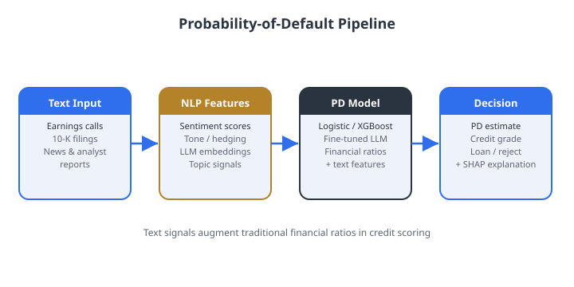

Text → features → PD model → decision: four stages to calibrate
Before doing any arithmetic, make sure you can sketch the pipeline from memory.

Figure. The credit PD pipeline: text and structured inputs are embedded,
a fine-tuned LLM produces a raw PD, calibration anchors it to empirical default rates,
and the calibrated PD drives the credit decision with SHAP reason codes for FCRA compliance.
Source: author illustration.
Recap · fixing the class imbalance
When 97% of loans are good, tell the model to care about the 3%
Defaults are rare, so a model can score well by ignoring them. Balanced class weights
multiply each example's loss so the rare defaulters count as much as the common good loans.
In plain words
Each defaulter is up-weighted, each good loan is down-weighted, so neither class can be ignored during training.
This is architecture-agnostic and works directly on the LLM fine-tuning objective.
Recap · forcing a clean answer
Make the LLM return a number, not a paragraph
A credit decision needs a probability, not prose. Constrained decoding blocks every
token that would break the required format, renormalising over only the legal next tokens.
a number is not a probability
Constrained decoding guarantees the format, never the calibration. That comes next.
Recap · making the number honest
Calibration: when the model says 30%, do 30% actually default?
A raw LLM score is often too extreme. Platt scaling fits a small logistic curve that
stretches or shrinks scores so the stated probability matches the realised default rate.
Recap · grading the ranking
Three numbers that say how well risk is sorted
Credit models are judged on ranking: do riskier borrowers score higher? AUROC, KS, and
Gini all measure that separation — and they're tied together by exact identities.
02
Problem 1: class imbalance & balanced weights
800,000 applications, 24,000 defaults. Make the model notice them.
Problem 1 · the setup
A lender with 800,000 loans and only 3% defaults
A retail lender fine-tunes an LLM on 800,000 applications: 24,000 defaulted (positive class),
776,000 did not.
Parts A & B
A — compute the balanced weights \(w_+\) and \(w_-\).
B — a model that always predicts "non-default" scores 97% accuracy. In one sentence, why is that misleading?
Parts C & D
C — why is SMOTE oversampling less practical for LLM fine-tuning than for gradient boosting?
D — at \(t=0.5\) the minority class still underperforms. Name one post-hoc fix that needs no retraining.
how to work
Individually for 8 minutes, then compare with your neighbour.
03
Problem 2: constrained generation & calibration
The model emits {"pd": <float>}. Is the number trustworthy?
Problem 2 · reading a reliability diagram
The model emits a clean PD — but is it over-confident?
An LLM uses constrained decoding to output {"pd": <float>}. For 1,000 borrowers
you have the raw \(\hat{p}\) and realised labels \(y \in \{0,1\}\).
Score bin
Mean \(\hat{p}\)
Observed default rate
\([0.0, 0.1)\)
0.05
0.02
\([0.1, 0.2)\)
0.15
0.09
\([0.2, 0.4)\)
0.30
0.22
\([0.4, 1.0]\)
0.55
0.48
Part A — Is the model over- or under-confident? How can you tell?
Problem 2 · fixing the number
Reading Platt parameters, and when to switch methods
Part B
You fit Platt scaling and get \(\hat{a}=0.72\), \(\hat{b}=-0.08\).
What does \(\hat{a} < 1\) imply about the model's raw scores?
Part C
When would you prefer isotonic regression over Platt scaling?
State one advantage and one disadvantage.
the bigger picture
Calibration is a tiny, cheap model bolted onto a huge one — and it's the step that turns an LLM's
confident-sounding score into a number a regulator will accept for expected loss and capital calculations.
04
Problem 3: AUROC, KS, and Gini — by hand
Five borrowers, two defaulters. Compute every metric from first principles.
Using \(\text{AUROC}=P(S_+>S_-)\), enumerate all \(2\times3=6\) (defaulter, non-defaulter) pairs and compute AUROC directly.
Part B
Compute KS: show the cumulative defaulter and non-defaulter fractions at each unique score and find the maximum gap.
Problem 3 · finishing up
From AUROC to Gini, then the verdict
Same portfolio: scores \(\{0.82, 0.61, 0.45, 0.30, 0.12\}\) with defaults \(\{1,0,1,0,0\}\)
(\(n_+=2\), \(n_-=3\)).
Part C
Compute Gini from your AUROC using \(\text{Gini} = 2\cdot\text{AUROC} - 1\).
Part D
Does the model clear the "good" retail-credit bar of KS \(> 0.40\) and Gini \(> 0.40\)?
05
Case Study: design an LLM credit-scoring pipeline
A European consumer lender, GDPR Article 22, ECOA — architecture is compliance.
Case study · the brief
Build a compliant LLM credit scorer in three steps
A European consumer lender wants to score personal-loan applications using both bureau data and
free-text loan-purpose statements — and must satisfy GDPR Article 22 and ECOA.
Step 1 (5 min) — sketch the architecture: name the five core subsystems and each one's role.
Step 2 (5 min) — remediate two flagged issues:
adverse-action rate is 12% higher when the loan purpose mentions geography ("moving to a new city");
outputs change a lot when the order of input fields is shuffled.
Step 3 (5 min) — design the human-in-the-loop workflow: three tiers and the routing criteria.
Case study · code (1 of 2)
Set up a constrained-decoding generator
Complete the code so the model is forced to emit a JSON object with a float "pd" in [0, 1].
import outlines
import outlines.models as models
model = models.transformers("bert-base-uncased")
# TODO: define a generator that constrains output to a JSON object
# with key "pd" and a float value in [0.0, 1.0]
generator = outlines.generate.json(
model,
# TODO: fill in the schema
???
)
Case study · code (2 of 2)
Run it on a borrower and pull out the PD
profile = """Age 34. Employment: full-time, 6 years. Income: $58,000.
Loan purpose: debt consolidation. Bureau score: 672. Delinquencies 24m: 1.
Assess default risk:"""
result = generator(profile)
print(f"Implied PD: {result['pd']:.3f}")
Questions
What JSON schema definition constrains "pd" to a float in [0, 1]?
After obtaining \(\hat{p}\), what is the next step before using it in a regulatory credit decision?
06
Discussion: human-in-the-loop trade-offs
An SR 11-7 "Moderate" rating, in production, with a mandatory Tier-2 review.
Discussion · small groups, 5 min
Three judgment calls a risk committee actually faces
Your SR 11-7 validation gives the model a "Moderate" rating: it passes performance thresholds but
shows non-trivial prompt sensitivity. It ships with mandatory Tier-2 review for borderline cases
(predicted PD within 5 pp of the threshold).
Automation bias — the interface shows the model's recommendation before the reviewer's independent assessment. What change would you prioritise, and why?
Prompt governance — the team wants to add two few-shot examples to lift commercial-credit performance. Does that require a new SR 11-7 validation? Justify.
GDPR vs. accuracy — dropping the loan-purpose field (to cut geographic proxy risk and bring the DIR above 0.80) lowers AUROC by 0.04. How do you frame that trade-off to senior risk?
07
Solutions: worked answers
Numbers first, intuition alongside. Don't peek until you've tried.
Solutions · Problem 1
Balanced weights, and why accuracy lies
A. The minority defaulters get ~16.7× the weight of a single majority-class loan.
B. Accuracy is dominated by the majority class — a trivial "always non-default" model hits 97% yet discriminates nothing.
C. SMOTE interpolates in feature space; for an LLM the "features" are high-dimensional token embeddings, so interpolation yields no meaningful synthetic borrower. Cost-sensitive loss acts on the objective directly and is architecture-agnostic.
D. Lower the decision threshold \(t\) below 0.5 to raise minority recall (trading precision); pick \(t\) from the business cost of false negatives vs. false positives.
Solutions · Problem 2
The model is over-confident — and Platt knows it
2A.Over-confident: predicted probabilities exceed observed default rates in every bin (e.g. 0.55 predicted vs. 0.48 observed). A calibrated model would show predicted = observed.
2B. \(\hat{a}=0.72 < 1\) confirms over-confidence: the raw scores are too extreme, and Platt scaling shrinks them toward the centre.
2C. Isotonic regression is more flexible (no parametric form) but needs more calibration data and cannot extrapolate beyond the observed score range. Prefer Platt for small sets (hundreds), isotonic for large ones (thousands).
Solutions · Problem 3
AUROC = 5/6, KS = 0.67, Gini = 0.67 — a "good" model
3A. Of the 6 (defaulter, non-defaulter) pairs, the defaulter outscores in 5 → AUROC \(= 5/6 \approx 0.833\).
3B. The widest gap between cumulative fractions is at \(s=0.45\) → KS \(= 0.67\).
3C. Gini \(= 2\times0.833 - 1 = \mathbf{0.667}\).
3D. KS \(=0.67>0.40\) and Gini \(=0.67>0.40\): both bars cleared — well within the "good" retail-credit range.
Solutions · Case study (1 of 2)
Five subsystems, and two targeted remediations
Step 1 — architecture (five subsystems)
Feature Store (point-in-time inputs) · Inference API (versioned JSON endpoint) ·
LLM Serving (self-hosted for GDPR) · Decision Record DB (append-only) ·
Monitoring (PSI + embedding drift + AUROC by vintage).
Geographic proxy risk (DIR < 0.80)
Compute DIR by geography reference in purpose text. Add a fairness post-processor that flags
applications where purpose text mentions location. Longer term: adversarial debiasing on the
loan-purpose field, or remove the geographic proxy and accept the AUROC cost if DIR cannot
be brought above the four-fifths threshold.
Prompt sensitivity
Standardise a fixed input template with deterministic field ordering; test deployed prompts
against a sensitivity suite in CI/CD; add field-order permutation to the SR 11-7 validation battery.
Solutions · Case study (2 of 2)
Three review tiers, escalating with risk
Tier 1 PD well below threshold, no adverse flags → random quality-control sampling only.
Tier 2 PD within 10% of threshold, or a SHAP value \(>0.05\) on a disputed field → full human review before the decision is communicated.
Tier 3 Borrower exercises GDPR Art. 22 or FCRA appeal → reviewer opens the full decision record with the SHAP waterfall and writes an independent assessment.
automation bias fix
Show the model's recommendation only after the reviewer has formed an independent assessment;
require documented reasoning before they see the model's output.
Wrap-up
Six things to carry out of this session
Class imbalance is problem #1. Balanced weights drop straight into the LLM fine-tuning loss. SMOTE doesn't work in token-embedding space.
Constrained generation extracts a number, not a guarantee. Always calibrate (Platt or isotonic) before regulatory use.
AUROC, KS, Gini are the minimal toolkit. Compute them from scratch; \(\text{Gini} = 2\cdot\text{AUROC}-1\) is exact.
Architecture is compliance. Feature store, versioned API, append-only DB, monitoring are SR 11-7 / GDPR requirements.
Prompt changes are model changes. Any prompt or few-shot edit goes through change management and triggers SR 11-7 revalidation.
SHAP → plain language → consumer explanation. Three distinct stages; the DIR / four-fifths rule is the fairness gate alongside discrimination metrics.
A
Appendix — stretch problem
Point-in-time vs. through-the-cycle calibration. Attempt only if you finished early.
Stretch · PIT vs. TTC
Why a benign-economy model under-reserves capital
An LLM trained on 2017–2019 originations produces point-in-time (PIT) PDs. Basel III Pillar 1
wants through-the-cycle (TTC) PDs — long-run average default rates over a full credit cycle (7–10 years).
A. Explain why a PIT model trained only on good-times data understates TTC PD, and what that implies for regulatory capital.
B. You recalibrate via Platt scaling over a full 7–10 year cycle and get \(\hat{a}=0.85\), \(\hat{b}=0.30\). Which parameter corrects over-confidence, and which shifts for cycle position?
C. Monitoring reports PSI \(=0.31\) on the bureau-score feature between training and current applicants. What action does that threshold trigger, and is it concept drift or population drift?